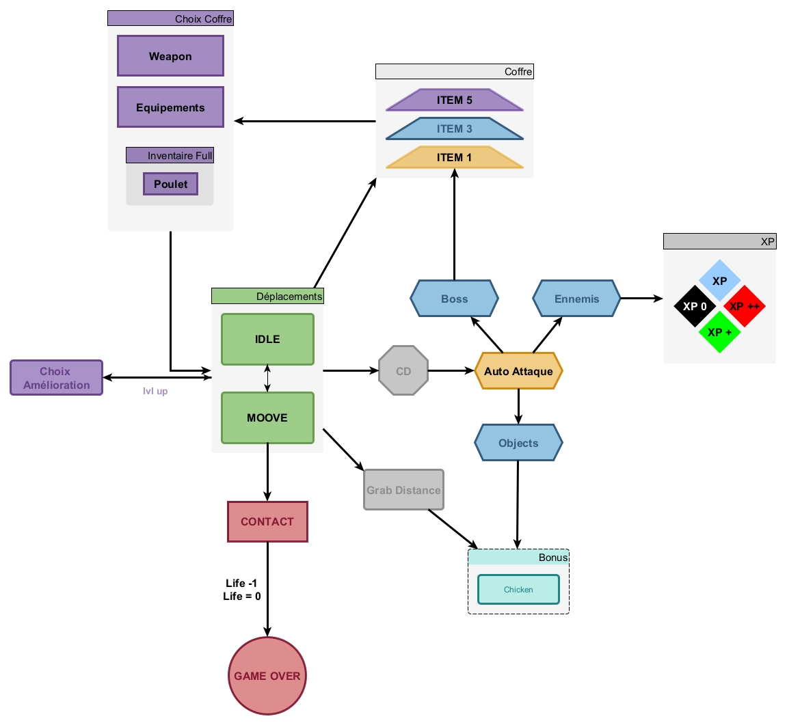
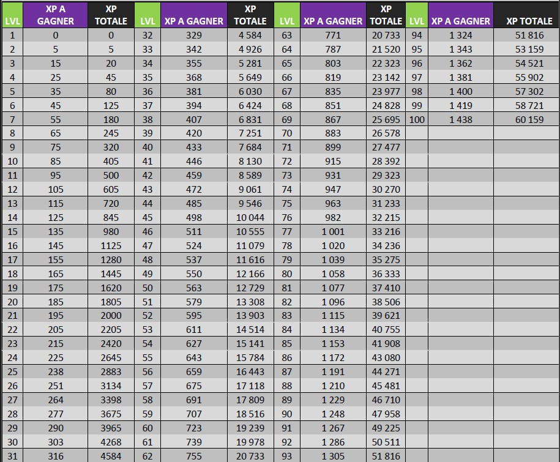

The Curse of The Lost Soul
Un survivor nerveux développé avec Playmaker : survivre 20 minutes en alternant entre Eden et Hell.
A fast-paced survivor built with Playmaker: survive 20 minutes while switching between Eden and Hell.
Design & dev soloSolo design & dev
2 mois2 months
Unity · Playmaker
Survivor
Concept : Eden & HellConcept: Eden & Hell
Le cœur du jeu repose sur une mécanique cyclique : toutes les 4 minutes, l'univers bascule.
The core of the game is a cyclic mechanic: every 4 minutes, the world shifts.
- Mode Eden : le joueur doit protéger et collecter des âmes errantes pour augmenter son score.
- Mode Hell : la carte change visuellement. Les âmes tentent de se jeter dans les flammes, le joueur doit les en empêcher physiquement tout en survivant.
- Eden mode: the player must protect and collect wandering souls to raise their score.
- Hell mode: the map visually changes. Souls try to throw themselves into the flames; the player must physically stop them while surviving.
Core gameplay loop
J'ai modélisé la boucle de jeu pour qu'elle soit claire et sans friction. Le joueur se déplace pour esquiver ou ramasser des bonus, pendant que l'auto-attaque, gérée par un temps de recharge, élimine les menaces.
I mapped out the core loop to be clear and frictionless. The player moves to dodge or grab bonuses, while the cooldown-based auto-attack takes out threats.

Tuer des ennemis génère des gemmes d'expérience. Une jauge remplie ouvre le menu de choix d'amélioration, tandis que l'élimination des boss permet d'ouvrir des coffres pour looter ou améliorer armes et équipements.
Killing enemies spawns experience gems. A full bar opens the upgrade choice menu, while defeating bosses drops chests to loot or upgrade weapons and equipment.
System design & progressionSystem design & progression
La progression repose sur 8 statistiques interconnectées (vitalité, vitesse, cadence de tir, portée, etc.). L'équilibrage a entièrement été pensé sur Excel.
Progression is built on 8 interconnected stats (vitality, speed, fire rate, range, etc.). Balancing was fully mapped out in Excel.

Le défi : gérer la courbe d'expérience. Il fallait maintenir un rythme de récompenses soutenu pour satisfaire le joueur, tout en augmentant la densité des hordes pour conserver du défi.
The challenge: managing the experience curve. I needed a steady reward pace to keep the player satisfied, while increasing horde density to keep the game challenging.
Asymétrie & économieAsymmetry & economy
Pour la rejouabilité, j'ai conçu deux classes aux gameplays opposés. Le prêtre Isengard excelle à distance grâce à ses projectiles et sa forte récupération, mais souffre d'une très faible mobilité. À l'inverse, le guerrier Altonis mise sur de lourds dégâts au corps-à-corps et une vitesse élevée pour esquiver les hordes.
For replayability, I designed two classes with opposite playstyles. The priest Isengard excels at range with projectiles and strong recovery, but has very low mobility. The warrior Altonis relies on heavy melee damage and high speed to dodge the hordes.
L'économie des dropsDrop economy
J'ai calibré le butin pour équilibrer frustration et récompense. Le joueur amasse surtout des gemmes bleues communes qui rapportent peu d'expérience, et des gemmes vertes sur les monstres rares. Les gemmes rouges, très généreuses, sont réservées aux boss.
I calibrated the loot to balance frustration and reward. The player mostly collects common blue gems worth little experience, and green gems from rare monsters. Red gems, worth a massive amount, are reserved for bosses.
La survie repose sur un objet de soin unique, le poulet, dont le taux d'obtention est fixé à 0,1 %. Cette rareté force le joueur à privilégier l'esquive plutôt qu'espérer un soin providentiel.
Survival relies on a single healing item, the chicken, with a drop rate set at 0.1%. This rarity forces the player to prioritize dodging over hoping for a lucky heal.
Des conditions de victoire punitivesPunishing win conditions
Survivre 20 minutes ne suffit pas. La mécanique cyclique impose une double pression : le joueur gagne uniquement si le nombre de monstres libérés dépasse le nombre d'âmes mortes dans les flammes. Si le ratio s'inverse, la défaite est immédiate, même avant la fin du temps.
Surviving 20 minutes is not enough. The cyclic mechanic creates a double pressure: the player only wins if the number of freed monsters exceeds the number of souls lost in the flames. If the ratio flips, defeat is immediate, even before time runs out.
UI & UX design
Plutôt qu'une interface plate classique, j'ai expérimenté en intégrant un modèle 3D dynamique directement dans l'UI du menu principal.
Rather than a classic flat interface, I experimented by integrating a dynamic 3D model directly into the main menu UI.
À plus grande échelle, l'objectif était un espace où le joueur visualise instantanément les changements visuels de son équipement et leur impact sur ses statistiques.
At a larger scale, the goal was a hub where the player instantly sees the visual changes of their gear and the impact on their stats.
Playmaker
J'ai développé l'intégralité de la logique du jeu avec Playmaker.
I built the entire game logic with Playmaker.
- Auto-attaque : l'attaque se déclenche selon la position du personnage. Je prévoyais d'ajouter un ciblage de l'ennemi le plus proche, ou une visée à la souris pour plus de contrôle.
- Patterns de mini-boss : scripting des comportements d'attaque et des différentes phases des boss.
- Auto-attack: attacks trigger from the character's position. I planned to add nearest-enemy targeting, or mouse aiming for more control.
- Mini-boss patterns: scripting of attack behaviors and boss phases.
Vision globaleOverall vision
Ce projet est un prototype inachevé. L'objectif final était d'intégrer un boss de fin apparaissant au terme des 20 minutes de survie.
This project is an unfinished prototype. The end goal was a final boss appearing after the 20 minutes of survival.
Mécanique prévue : le boss aurait cumulé les scores des deux mondes. Plus le joueur sauvait d'âmes, plus le boss aurait été affaibli. À l'inverse, si beaucoup d'âmes avaient péri dans les flammes, le combat final serait devenu très punitif, ce qui récompense les joueurs proactifs.
Planned mechanic: the boss would have scaled from both worlds' scores. The more souls saved, the weaker the boss. If many souls burned, the final fight would have become very punishing, rewarding proactive players.